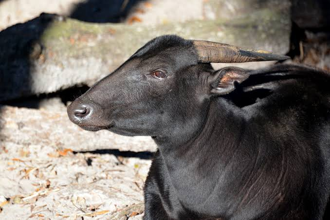

Konservasi Hewan Indonesia

Nama Hewan: Anoa (Bubalus depressicornis)
Tahun Punah: -
Asal Kota/Daerah: Sulawesi
Status: Terancam

Nama Hewan: Badak Jawa (Rhinoceros sondaicus)
Tahun Punah: -
Asal Kota/Daerah: Ujung Kulon, Banten
Status: Terancam Kritis

Nama Hewan: Harimau Sumatra (Panthera tigris sumatrae)
Tahun Punah: -
Asal Kota/Daerah: Sumatra
Status: Terancam Kritis

Nama Hewan: Orangutan Sumatra (Pongo abelii)
Tahun Punah: -
Asal Kota/Daerah: Sumatra Utara
Status: Terancam Kritis

Nama Hewan: Orangutan Kalimantan (Pongo pygmaeus)
Tahun Punah: -
Asal Kota/Daerah: Kalimantan Tengah/Timur
Status: Terancam

Nama Hewan: Burung Maleo (Macrocephalon maleo)
Tahun Punah: -
Asal Kota/Daerah: Sulawesi Tengah
Status: Terancam